Plots¶
-
techminer.plots.bar(data, column, width=0.8, bottom=None, align='center', prop_to=None, cmap='Greys', figsize=10, 6, fontsize=13, **kwargs)[source]¶ [summary]
- Parameters
data (pandas.DataFrame) – A biblographic dataframe.
column (int or string) – Column with the height(s) of the bars.
width (float, optional) – scalar or array-like. The width(s) of the bars. Defaults to 0.8.
bottom (scalar or array-like, optional) – The y coordinate(s) of the bars bases. Defaults to None.
align ({'center', 'edge'}, optional) –
Alignment of the bars to the x coordinates. Defaults to ‘center’.
’center’: Center the base on the x positions.
’edge’: Align the left edges of the bars with the x positions. To align the bars on the right edge pass a negative width and align=’edge’.
prop_to (array-like, optional) – Bar colors proportional to values in this array. Defaults to None.
cmap (str, optional) – Colormap used to build the plot. Defaults to ‘Greys’.
figsize (tuple, optional) – Figure size. Defaults to (10, 6)
fontsize (int) – fonsize for plots.
**kwargs – Optional arguments pased to matplotlib’s bar function.
Examples
>>> import pandas as pd >>> df = pd.DataFrame( ... { ... "Authors": "author 3,author 1,author 0,author 2".split(","), ... "Num_Documents": [3, 2, 2, 1], ... "Colors": [1, 2, 3, 4], ... "ID": list(range(4)), ... } ... ) >>> df Authors Num_Documents ID 0 author 3 3 0 1 author 1 2 1 2 author 0 2 2 3 author 2 1 3 >>> fig = bar(df['Num_Documents], cmap='Blues') >>> fig.savefig('sphinx/images/barplot1.png')

>>> fig = bar(df['Num_Documents], prop_to=df['Colors', cmap='Blues') >>> fig.savefig('sphinx/images/barplot2.png')

-
techminer.plots.barh(data, column, height=0.8, left=None, align='center', prop_to=None, cmap='Greys', figsize=10, 6, fontsize=13, **kwargs)[source]¶ [summary]
- Parameters
data ([type]) – [description]
column ([type]) – [description]
height (float, optional) – [description]. Defaults to 0.8.
left ([type], optional) – [description]. Defaults to None.
align (str, optional) – [description]. Defaults to “center”.
prop_to ([type], optional) – [description]. Defaults to None.
cmap (str, optional) – [description]. Defaults to “Greys”.
figsize (tuple, optional) – [description]. Defaults to (10, 6).
fontsize (int, optional) – [description]. Defaults to 10.
- Returns
[description]
- Return type
[type]
Examples
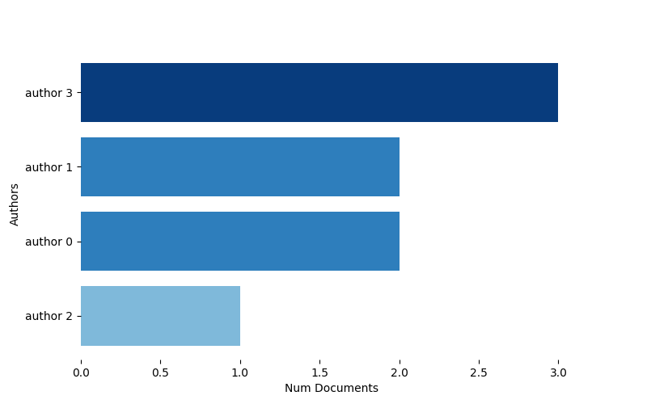>>> import pandas as pd >>> x = pd.DataFrame( ... { ... "Authors": "author 3,author 1,author 0,author 2".split(","), ... "Num_Documents": [3, 2, 2, 1], ... "ID": list(range(4)), ... } ... ) >>> x Authors Num_Documents ID 0 author 3 3 0 1 author 1 2 1 2 author 0 2 2 3 author 2 1 3 >>> fig = barh(x, cmap='Blues') >>> fig.savefig('sphinx/images/barhplot.png')
{kind=link}
-
techminer.plots.bubble(x, prop_to, figsize=9, 9, cmap='Blues', grid_lw=1.0, grid_c='gray', grid_ls=':', fontsize=12, **kwargs)[source]¶ Creates a gant activity plot from a dataframe.
Examples
>>> import pandas as pd >>> df = pd.DataFrame( ... { ... "author 0": [ 1, 2, 3, 4, 5, 6, 7], ... "author 1": [14, 13, 12, 11, 10, 9, 8], ... "author 2": [1, 5, 8, 9, 0, 0, 0], ... "author 3": [0, 0, 1, 1, 1, 0, 0], ... "author 4": [0, 10, 0, 4, 2, 0, 1], ... }, ... index =[2010, 2011, 2012, 2013, 2014, 2015, 2016] ... ) >>> df author 0 author 1 author 2 author 3 author 4 2010 1 14 1 0 0 2011 2 13 5 0 10 2012 3 12 8 1 0 2013 4 11 9 1 4 2014 5 10 0 1 2 2015 6 9 0 0 0 2016 7 8 0 0 1
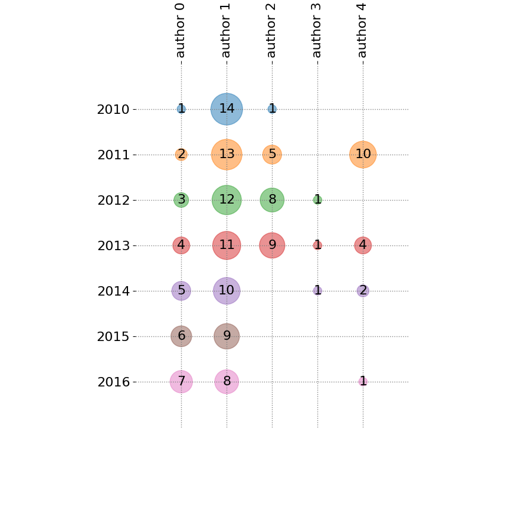>>> fig = bubble(df, axis=0, alpha=0.5, rmax=150) >>> fig.savefig('sphinx/images/bubbleplot0.png')
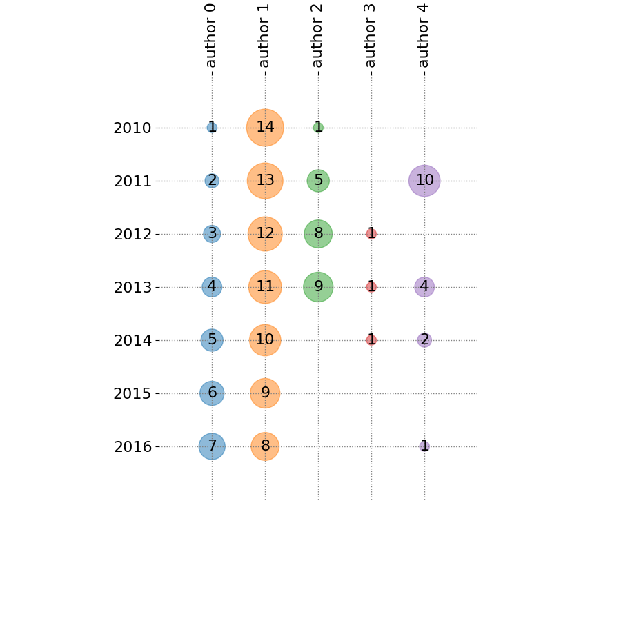>>> fig = bubble(df, axis=1, alpha=0.5, rmax=150) >>> fig.savefig('sphinx/images/bubbleplot1.png')
{kind=link}
{kind=link}
-
techminer.plots.chord_diagram(x, figsize=10, 10, cmap='Greys', alpha=1.0, minval=0.0, top_n_links=None, solid_lines=False)[source]¶ Creates a chord diagram from a correlation or an auto-correlation matrix.
Examples
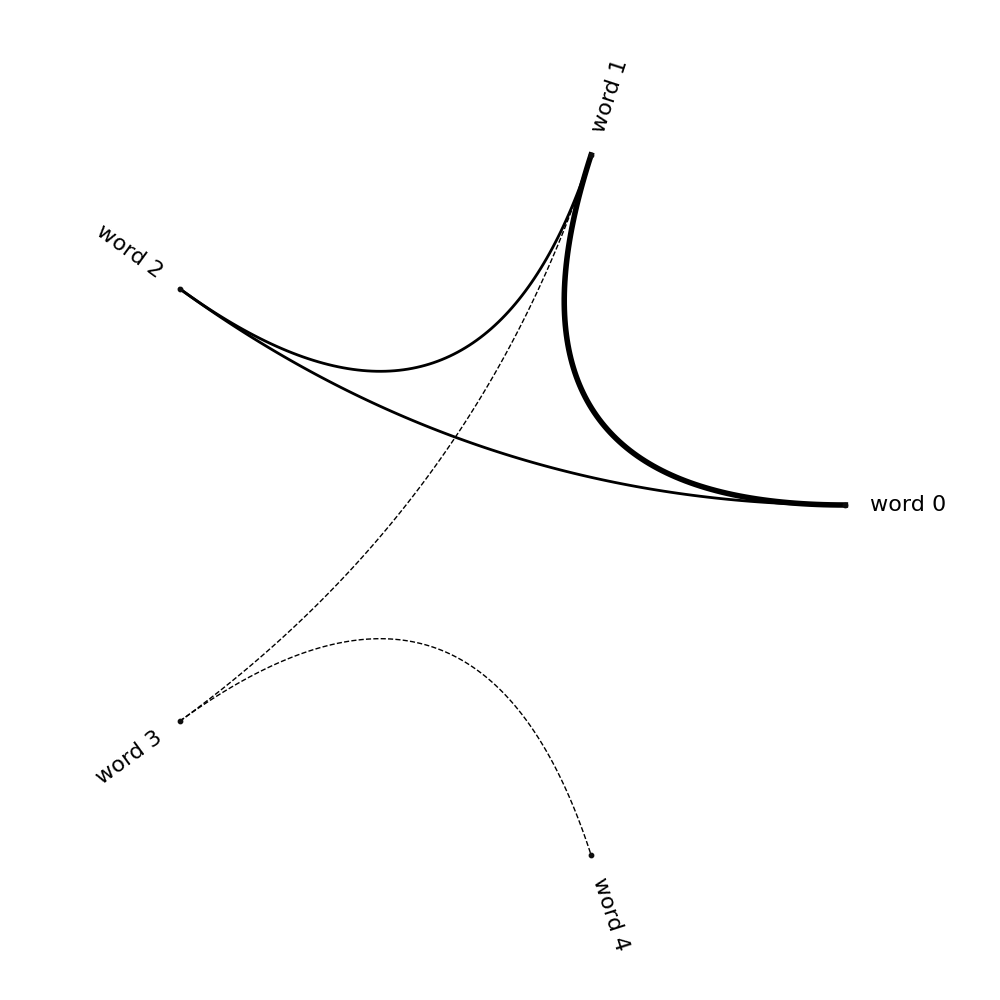>>> import pandas as pd >>> df = pd.DataFrame( ... { ... 'word 0': [1.00, 0.80, 0.70, 0.00,-0.30], ... 'word 1': [0.80, 1.00, 0.70, 0.50, 0.00], ... 'word 2': [0.70, 0.70, 1.00, 0.00, 0.00], ... 'word 3': [0.00, 0.50, 0.00, 1.00, 0.30], ... 'word 4': [-0.30, 0.00, 0.00, 0.30, 1.00], ... }, ... index=['word {:d}'.format(i) for i in range(5)] ... ) >>> df word 0 word 1 word 2 word 3 word 4 word 0 1.0 0.8 0.7 0.0 -0.3 word 1 0.8 1.0 0.7 0.5 0.0 word 2 0.7 0.7 1.0 0.0 0.0 word 3 0.0 0.5 0.0 1.0 0.3 word 4 -0.3 0.0 0.0 0.3 1.0 >>> fig = chord_diagram(df) >>> fig.savefig('sphinx/images/plotcd1.png')
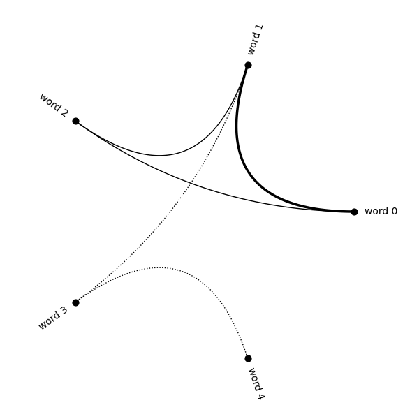>>> fig = chord_diagram(df, top_n_links=5) >>> fig.savefig('sphinx/images/plotcd2.png')
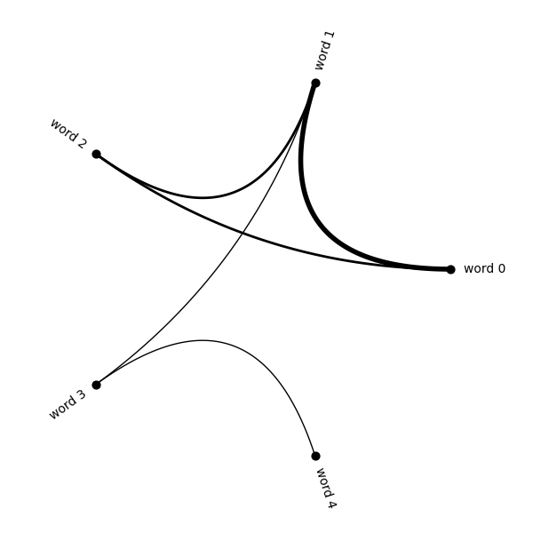>>> fig = chord_diagram(df, solid_lines=True) >>> fig.savefig('sphinx/images/plotcd3.png')
{kind=link}
{kind=link}
{kind=link}
-
techminer.plots.gant(x, figsize=8, 8, grid_lw=1.0, grid_c='gray', grid_ls=':', *args, **kwargs)[source]¶ Creates a gant activity plot from a dataframe.
Examples
>>> import pandas as pd >>> df = pd.DataFrame( ... { ... "author 0": [1, 1, 0, 0, 0, 0, 0], ... "author 1": [0, 1, 1, 0, 0, 0, 0], ... "author 2": [1, 0, 0, 0, 0, 0, 0], ... "author 3": [0, 0, 1, 1, 1, 0, 0], ... "author 4": [0, 0, 0, 0, 0, 0, 1], ... }, ... index =[2010, 2011, 2012, 2013, 2014, 2015, 2016] ... ) >>> df author 0 author 1 author 2 author 3 author 4 2010 1 0 1 0 0 2011 1 1 0 0 0 2012 0 1 0 1 0 2013 0 0 0 1 0 2014 0 0 0 1 0 2015 0 0 0 0 0 2016 0 0 0 0 1
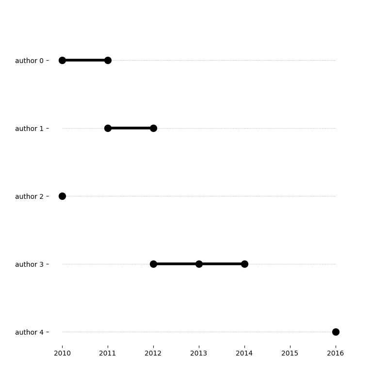>>> fig = gant(df) >>> fig.savefig('sphinx/images/gantplot.png')
{kind=link}
-
techminer.plots.heatmap(x, figsize=8, 8, fontsize=12, **kwargs)[source]¶ Plots a heatmap from a matrix.
Examples
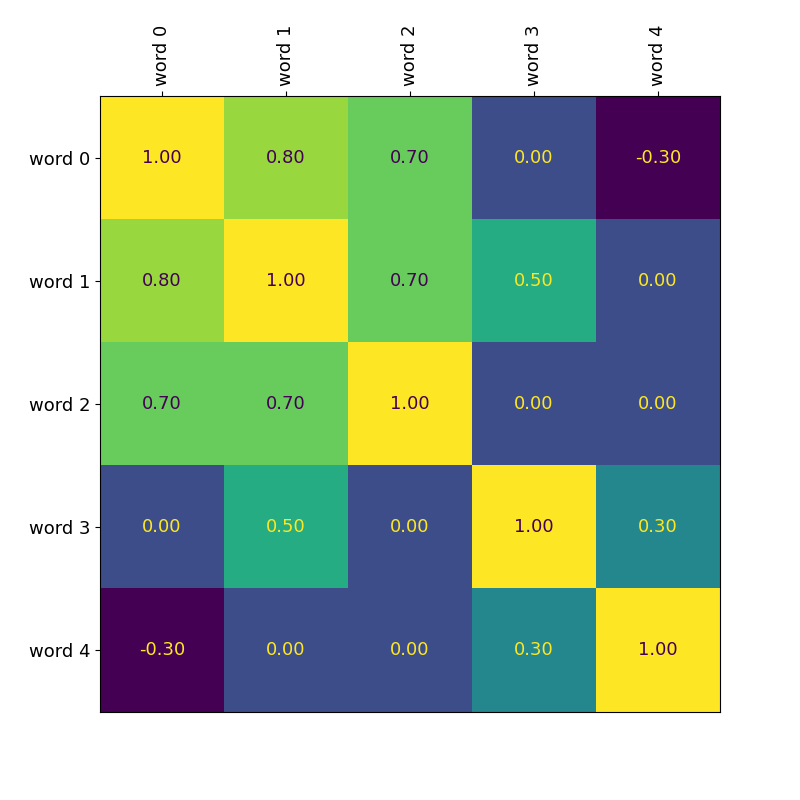>>> import pandas as pd >>> df = pd.DataFrame( ... { ... 'word 0': [1.00, 0.80, 0.70, 0.00,-0.30], ... 'word 1': [0.80, 1.00, 0.70, 0.50, 0.00], ... 'word 2': [0.70, 0.70, 1.00, 0.00, 0.00], ... 'word 3': [0.00, 0.50, 0.00, 1.00, 0.30], ... 'word 4': [-0.30, 0.00, 0.00, 0.30, 1.00], ... }, ... index=['word {:d}'.format(i) for i in range(5)] ... ) >>> df word 0 word 1 word 2 word 3 word 4 word 0 1.0 0.8 0.7 0.0 -0.3 word 1 0.8 1.0 0.7 0.5 0.0 word 2 0.7 0.7 1.0 0.0 0.0 word 3 0.0 0.5 0.0 1.0 0.3 word 4 -0.3 0.0 0.0 0.3 1.0 >>> fig = heatmap(df) >>> fig.savefig('sphinx/images/plotheatmap1.png')
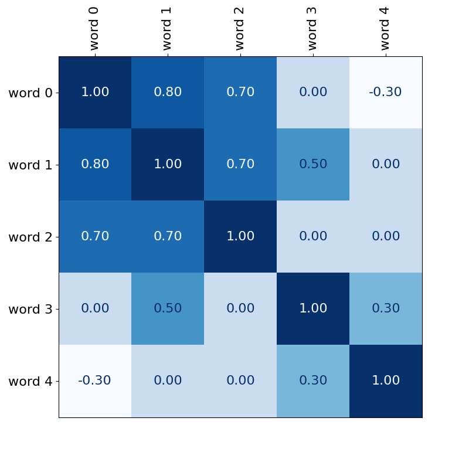>>> fig = heatmap(df, cmap='Blues') >>> fig.savefig('sphinx/images/plotheatmap2.png')
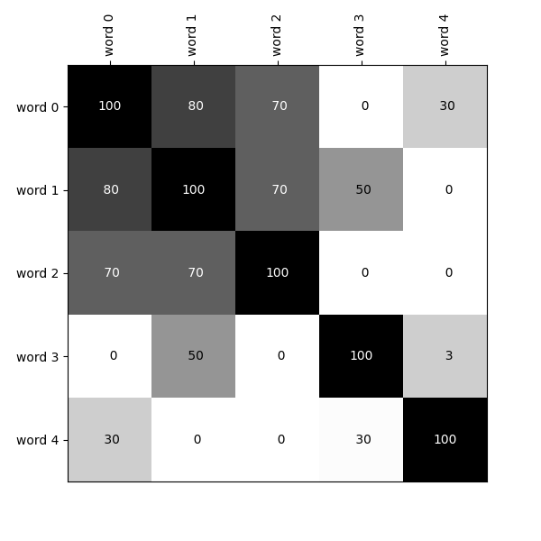>>> df = pd.DataFrame( ... { ... 'word 0': [100, 80, 70, 0,30], ... 'word 1': [80, 100, 70, 50, 0], ... 'word 2': [70, 70, 100, 0, 0], ... 'word 3': [0, 50, 0, 100, 3], ... 'word 4': [30, 0, 0, 30, 100], ... }, ... index=['word {:d}'.format(i) for i in range(5)] ... ) >>> df word 0 word 1 word 2 word 3 word 4 word 0 100 80 70 0 30 word 1 80 100 70 50 0 word 2 70 70 100 0 0 word 3 0 50 0 100 30 word 4 30 0 0 3 100 >>> fig = heatmap(df, cmap='Greys') >>> fig.savefig('sphinx/images/plotheatmap3.png')
>>> df = pd.DataFrame( ... { ... 'word 0': [100, 80, 70, 0,30, 1], ... 'word 1': [80, 100, 70, 50, 0, 2], ... 'word 2': [70, 70, 100, 0, 0, 3], ... 'word 3': [0, 50, 0, 100, 3, 4], ... 'word 4': [30, 0, 0, 30, 100, 5], ... }, ... index=['word {:d}'.format(i) for i in range(6)] ... ) >>> df word 0 word 1 word 2 word 3 word 4 word 0 100 80 70 0 30 word 1 80 100 70 50 0 word 2 70 70 100 0 0 word 3 0 50 0 100 30 word 4 30 0 0 3 100 word 5 1 2 3 4 5
>>> fig = heatmap(df, cmap='Greys') >>> fig.savefig('sphinx/images/plotheatmap3.png')
{kind=link}
{kind=link}
{kind=link}
-
techminer.plots.pie(data, column, prop_to=None, fontsize=12, figsize=8, 8, cmap='Greys', explode=None, autopct=None, pctdistance=0.6, shadow=False, labeldistance=1.1, startangle=None, radius=None, counterclock=True, wedgeprops={'antialiased': True, 'edgecolor': 'k', 'linestyle': '-', 'linewidth': 0.5, 'width': 0.6}, textprops=None, center=0, 0, frame=False, rotatelabels=False)[source]¶ Creates a pie plot from a dataframe.
Examples
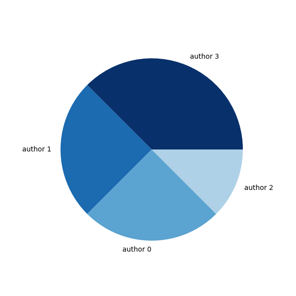>>> import pandas as pd >>> df = pd.DataFrame( ... { ... "Authors": "author 3,author 1,author 0,author 2".split(","), ... "Num_Documents": [3, 2, 2, 1], ... "ID": list(range(4)), ... } ... ) >>> df Authors Num_Documents ID 0 author 3 3 0 1 author 1 2 1 2 author 0 2 2 3 author 2 1 3 >>> fig = pie(df, cmap="Blues") >>> fig.savefig('sphinx/images/pieplot.png')
{kind=link}
-
techminer.plots.plot(data, *args, figsize=9, 9, cmap='Blues', scalex=True, scaley=True, fontsize=12, **kwargs)[source]¶ Creates a plot from a dataframe.
Examples
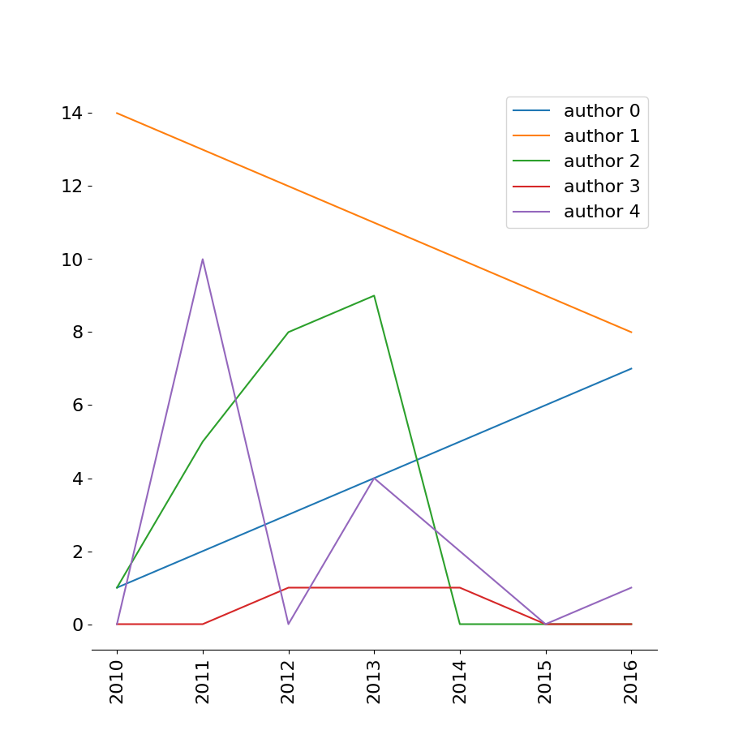>>> import pandas as pd >>> df = pd.DataFrame( ... { ... "author 0": [ 1, 2, 3, 4, 5, 6, 7], ... "author 1": [14, 13, 12, 11, 10, 9, 8], ... "author 2": [1, 5, 8, 9, 0, 0, 0], ... "author 3": [0, 0, 1, 1, 1, 0, 0], ... "author 4": [0, 10, 0, 4, 2, 0, 1], ... }, ... index =[2010, 2011, 2012, 2013, 2014, 2015, 2016] ... ) >>> df author 0 author 1 author 2 author 3 author 4 2010 1 14 1 0 0 2011 2 13 5 0 10 2012 3 12 8 1 0 2013 4 11 9 1 4 2014 5 10 0 1 2 2015 6 9 0 0 0 2016 7 8 0 0 1 >>> fig = plot(df) >>> fig.savefig('sphinx/images/plotplot.png')
{kind=link}
-
techminer.plots.stacked_bar(data, columns, figsize=10, 10, fontsize=12, width=0.8, bottom=None, align='center', cmap='Greys', **kwargs)[source]¶ Stacked vertical bar plot.
Examples
>>> import pandas as pd >>> df = pd.DataFrame( ... { ... "Authors": "author 0,author 1,author 2,author 3,author 3,author 5".split(","), ... "col 0": [6, 5, 4, 3, 2, 1], ... "col 1": [0, 2, 5, 1, 5, 7], ... "ID": list(range(6)), ... } ... ) >>> df Authors col 0 col 1 ID 0 author 0 6 0 0 1 author 1 5 2 1 2 author 2 4 5 2 3 author 3 3 1 3 4 author 3 2 5 4 5 author 5 1 7 5
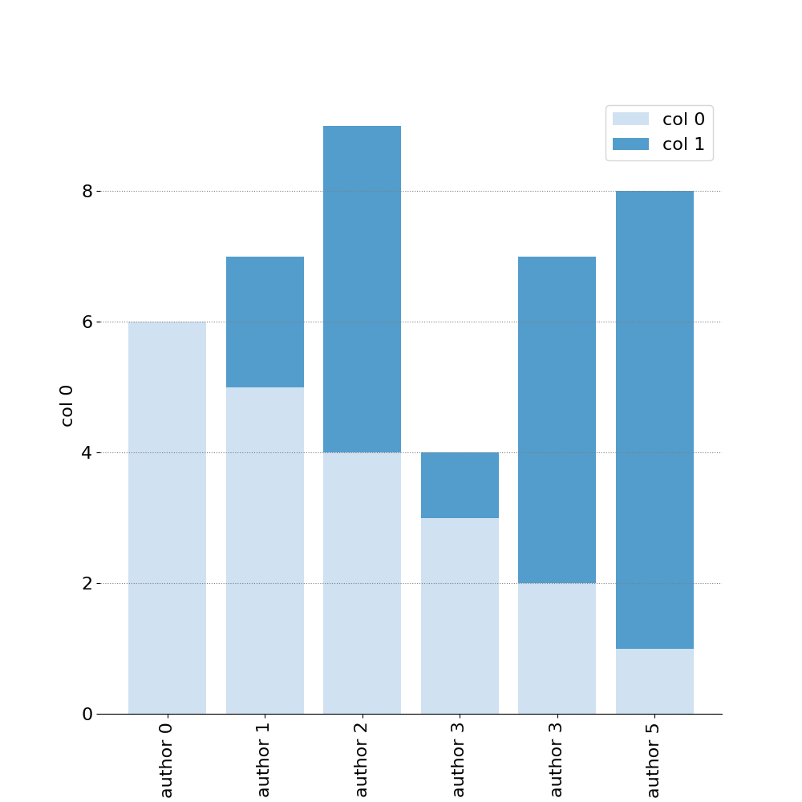>>> fig = stacked_bar(df, cmap='Blues') >>> fig.savefig('sphinx/images/stkbar0.png')
>>> df = pd.DataFrame( ... { ... "Authors": "author 0,author 1,author 2,author 3,author 3,author 5".split(","), ... "col 0": [6, 5, 2, 3, 4, 1], ... "col 1": [0, 1, 2, 3, 4, 5], ... "col 2": [3, 2, 3, 1, 0, 1], ... "ID": list(range(6)), ... } ... ) >>> df Authors col 0 col 1 col 2 ID 0 author 0 6 0 3 0 1 author 1 5 1 2 1 2 author 2 2 2 3 2 3 author 3 3 3 1 3 4 author 3 4 4 0 4 5 author 5 1 5 1 5
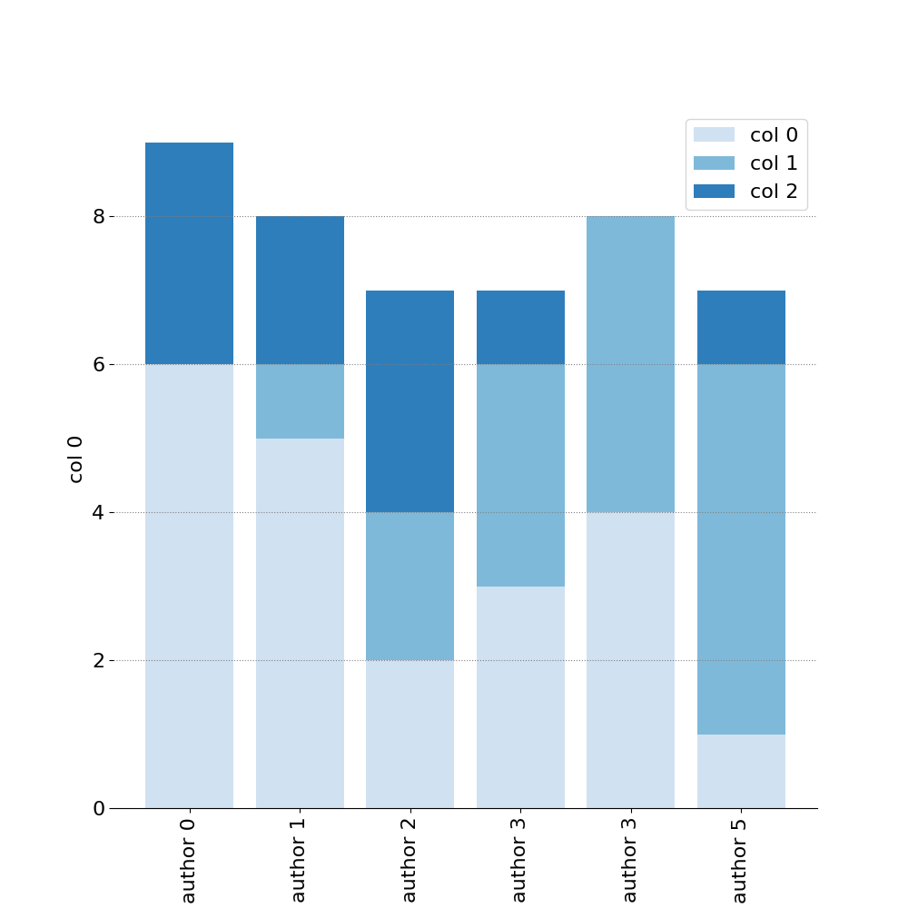>>> fig = stacked_bar(df, cmap='Blues') >>> fig.savefig('sphinx/images/stkbar1.png')
{kind=link}
{kind=link}
-
techminer.plots.stacked_barh(data, columns, figsize=10, 10, height=0.8, left=None, align='center', cmap=None, **kwargs)[source]¶ Stacked horzontal bar plot.
Examples
>>> import pandas as pd >>> df = pd.DataFrame( ... { ... "Authors": "author 0,author 1,author 2,author 3,author 3,author 5".split(","), ... "col 0": [6, 5, 4, 3, 2, 1], ... "col 1": [0, 2, 5, 1, 5, 7], ... "ID": list(range(6)), ... } ... ) >>> df Authors col 0 col 1 ID 0 author 0 6 0 0 1 author 1 5 2 1 2 author 2 4 5 2 3 author 3 3 1 3 4 author 3 2 5 4 5 author 5 1 7 5
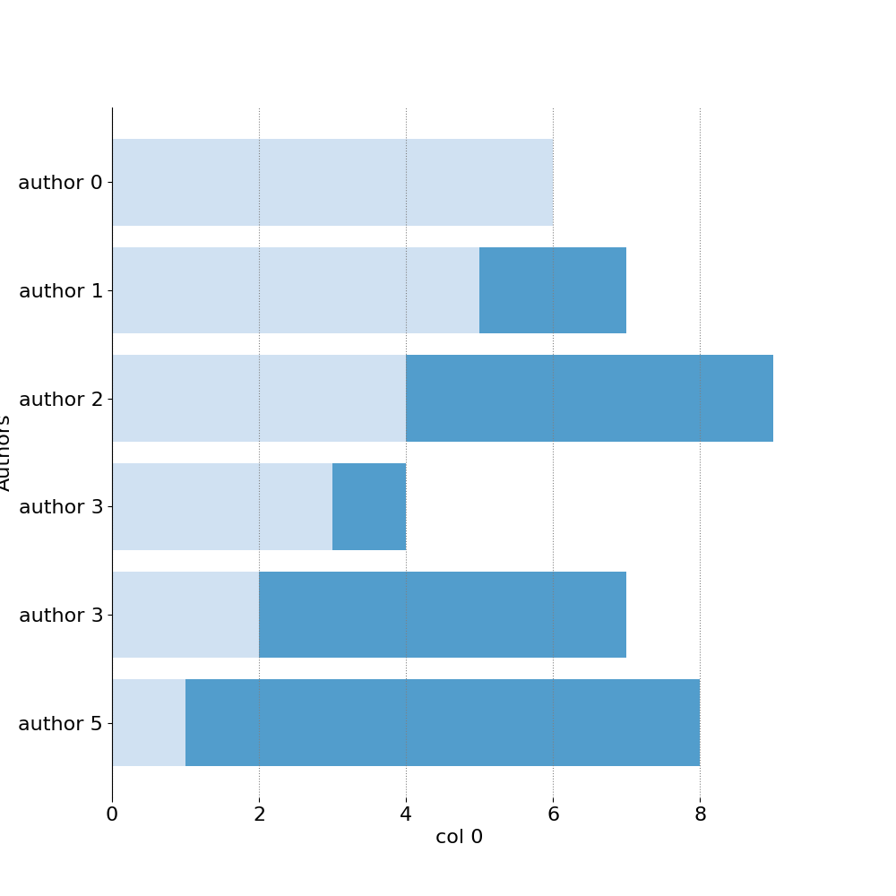>>> fig = stacked_barh(df, cmap='Blues') >>> fig.savefig('sphinx/images/stkbarh0.png')
>>> df = pd.DataFrame( ... { ... "Authors": "author 0,author 1,author 2,author 3,author 3,author 5".split(","), ... "col 0": [6, 5, 2, 3, 4, 1], ... "col 1": [0, 1, 2, 3, 4, 5], ... "col 2": [3, 2, 3, 1, 0, 1], ... "ID": list(range(6)), ... } ... ) >>> df Authors col 0 col 1 col 2 ID 0 author 0 6 0 3 0 1 author 1 5 1 2 1 2 author 2 2 2 3 2 3 author 3 3 3 1 3 4 author 3 4 4 0 4 5 author 5 1 5 1 5
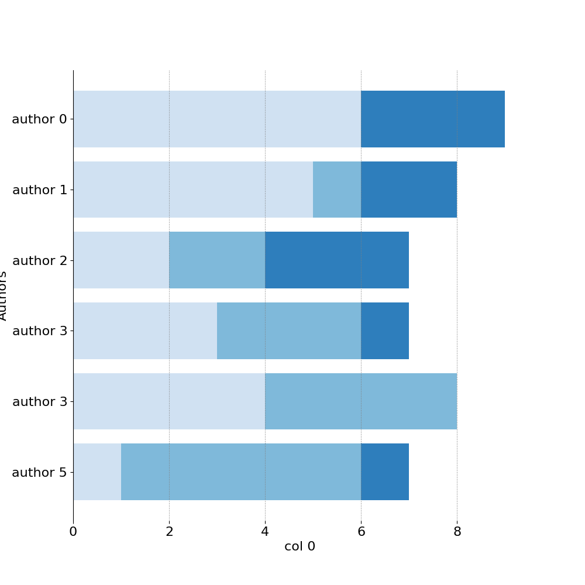>>> fig = stacked_barh(df, cmap='Blues') >>> fig.savefig('sphinx/images/stkbarh1.png')
{kind=link}
{kind=link}
-
techminer.plots.treemap(data, column, prop_to=None, fontsize=12, cmap='Blues', figsize=8, 8, alpha=0.9)[source]¶ Creates a classification plot from a dataframe.
Examples
>>> import pandas as pd >>> df = pd.DataFrame( ... { ... "Authors": "author 3,author 1,author 0,author 2".split(","), ... "Num_Documents": [10, 5, 2, 1], ... "ID": list(range(4)), ... } ... ) >>> df Authors Num_Documents ID 0 author 3 10 0 1 author 1 5 1 2 author 0 2 2 3 author 2 1 3
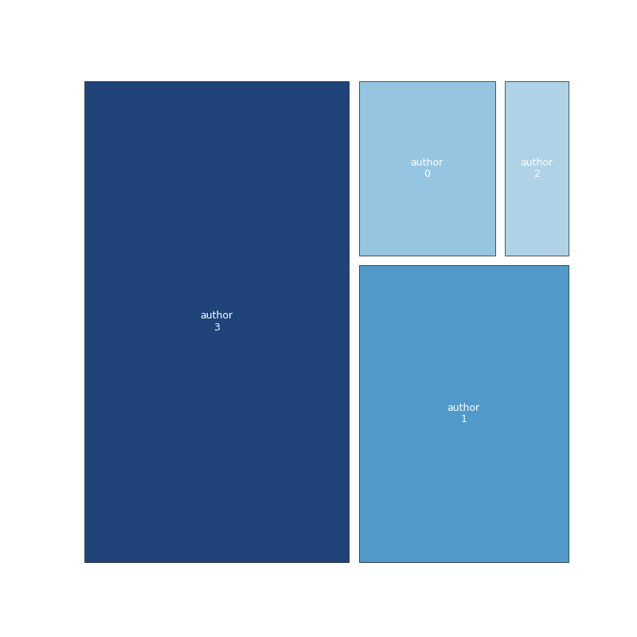>>> fig = treemap(df) >>> fig.savefig('sphinx/images/treeplot.png')
{kind=link}
-
techminer.plots.wordcloud(data, column, prop_to=None, figsize=8, 8, font_path=None, width=400, height=200, margin=2, ranks_only=None, prefer_horizontal=0.9, mask=None, scale=1, max_words=200, min_font_size=4, stopwords=None, random_state=None, background_color='white', max_font_size=None, font_step=1, mode='RGB', relative_scaling='auto', regexp=None, collocations=True, cmap='Blues', normalize_plurals=True, contour_width=0, contour_color='black', repeat=False, include_numbers=False, min_word_length=0)[source]¶ Plots a wordcloud from a dataframe.
Examples
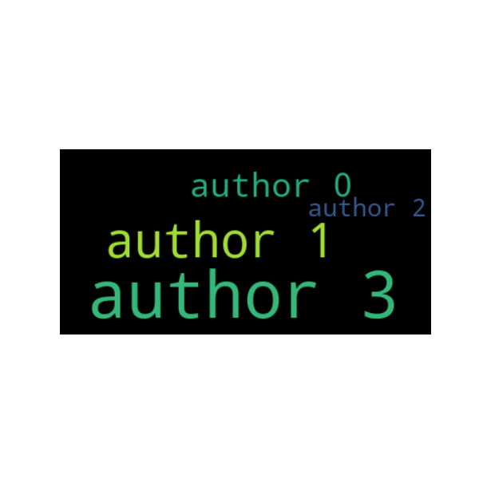>>> import pandas as pd >>> df = pd.DataFrame( ... { ... "Authors": "author 3,author 1,author 0,author 2".split(","), ... "Num_Documents": [10, 5, 2, 1], ... "ID": list(range(4)), ... } ... ) >>> df Authors Num_Documents ID 0 author 3 10 0 1 author 1 5 1 2 author 0 2 2 3 author 2 1 3 >>> fig = wordcloud(df) >>> fig.savefig('sphinx/images/wordcloud.png')
{kind=link}
-
techminer.plots.worldmap(data, cmap='Pastel2', figsize=10, 5, legend=True, fontsize=12, *args, **kwargs)[source]¶ Worldmap plot with the number of documents per country.
Examples
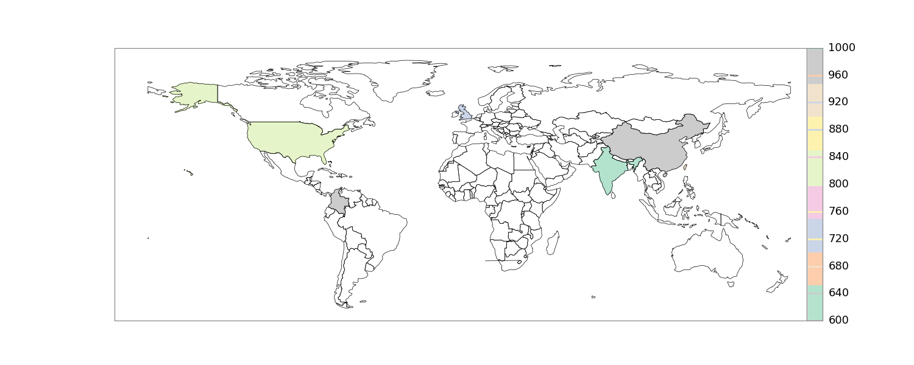>>> import pandas as pd >>> x = pd.DataFrame( ... { ... "AU_CO": ["China", "Taiwan", "United States", "United Kingdom", "India", "Colombia"], ... "Num_Documents": [1000, 900, 800, 700, 600, 1000], ... }, ... ) >>> x AU_CO Num_Documents 0 China 1000 1 Taiwan 900 2 United States 800 3 United Kingdom 700 4 India 600 5 Colombia 1000 >>> fig = worldmap(x, figsize=(15, 6)) >>> fig.savefig('sphinx/images/worldmap.png')
{kind=link}